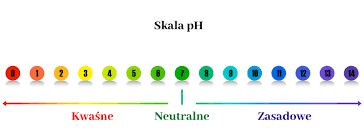

CO TO JEST TONIK DO TWARZY?
Tonik to inaczej płyn na bazie wody, którego zadaniem jest przywracanie skórze naturalnego poziomu pH. Dlaczego przywracanie?  Ponieważ oczyszczając twarz mydłem czy żelem do twarzy, możemy wytrącić skórę z równowagi. Odczyn pH skóry z normalnych warunkach jest kwaśny i wynosi około 5. Produkty kosmetyczne, takie jak mydła mają z kolei odczyn silnie zasadowy, więc nie trudno uwierzyć, że po zetknięciu z tego typu różnicą, pH skóry zostaje zaburzone.
JAK UŻYWAĆ TONIKU DO TWARZY?
Tonik należy aplikować po uprzednim demakijażu i oczyszczeniu twarzy. Niewielką ilość kosmetyku nałóż na wacik kosmetyczny, a następnie delikatnie przetrzyj nim twarz, w kierunku od środka na zewnątrz. Jak używać toniku w sprayu? Rozpyl go na twarzy, odczekaj chwilę, a następnie osusz skórę przy pomocy chusteczki. Po zastosowaniu kosmetyku, zaaplikuj ulubiony krem dopasowany do potrzeb Twojej cery.
JAKI TONIK POLECAM?
Zdecydowanie z the ordinary, sprawdza się dobrze dla prawie każego typu skóry!! Zostawiam wam linka do niego, kupujcie i ocenicie sami 🥰!!